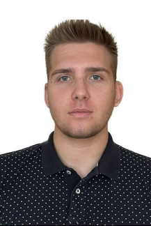

Radosław Jasiński
E-mail: jasinski.radoslaw2002@gmail.com
Phone: 737463902
Birth: 21.05.2002
City: Olsztyn
I have learnt building a html site. That includes placing a photo, making horizontal line, changing the size of a text, making paragraphs etc. I'm ready to learn more about coding! I'm ready to learn more about coding!
Education
-
10.2022 - now
-
Politechnika Białostocka, Wydział Inżynierii Zarządzania
-
Specialization: logistics
-
Degree of education: Bechelor degree
-
09.2018 - 05.2022
-
Technikum Informatyczno-Ekonomiczne nr 9 in Olsztyn
-
Specjalization: Computer technician
-
Degree of education: vocational
-
Additional information
-
Qualification EE.08 "Installation and operation of computer systems, devices peripherals and networks"
-
ualification EE.09 "Programming, creation and administration of websites and databases"
Working experience
Knowledge of language
English: C1 level
Skills
Communicativeness | Effective communication and interpersonal skills | Teamwork | Ability yo learn quickly and efectively | Driving license cat. B | Good organization of work | Commitment | Hard-working | Adaptability | Computer proficiency
Training, courses, certificates
-
05.2023
-
II Interdyscyplinarna Studencka Konferencja Naukowa "Statystyka na co dzień"
-
Organization Unit: Wydział Inżynierii Zarządzania Politechniki Białostockiej
-
05.2022
-
Dyplon potwierdzający kwalifikacje w zawodzie EE.08, EE.09
-
Organization Unit: OKE Łomża
Interests
Basketball, computer technology, cycling